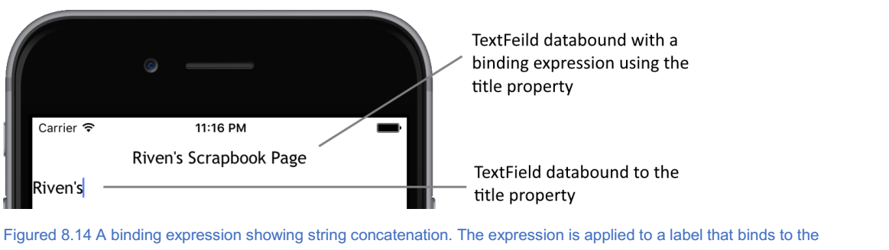
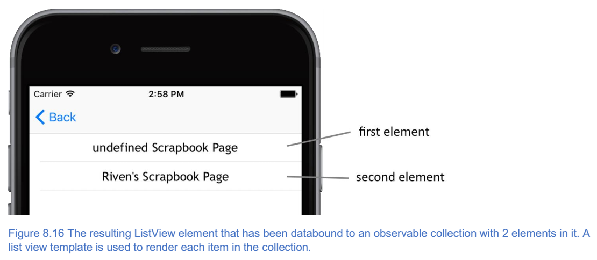

9. 使用数据¶
本章涵盖
- 如何使用可观察对象和可观察数组
- 如何在
observables更改其值时自动更新UI元素 - 设备的本地存储如何用于保存数据
在最后几章中，您深入了解了通过 Tekmo 应用程序的镜头如何使用 NativeScript 创建应用程序。 您了解了如何设计多页面应用程序，浏览页面，以及如何使用布局和 CSS 组织和设计 UI 。在 Tekmo 应用程序中，花了很多时间来复制 UI 元素：以产品页面为例（图8.1）。
每个产品都在产品页面的 XML 文件中进行了硬编码。是的，只有六种产品，但如果有几十种产品的话。更多呢？如果产品定期更换怎么办？事实上，更新硬编码的 UI 元素会很快变得麻烦。
让我们采取一种不同的方法：假设我们从文件，数据库或可公开访问的 API 端点为 Tekmo 应用程序提取了产品列表？检索这些数据后，我们可以使用检索到的数据更新产品列表。这将允许我们编写更少的代码，并且我们的应用程序会更加动态，因为我们不再对所有内容进行硬编码。
在本章中，我们将教您如何编写更少的代码并使您的应用程序更具动态性。同时，我们将构建一个新的应用程序：宠物剪贴簿。通过宠物剪贴簿，您可以通过创建充满图像和标题的虚拟剪贴簿页面来捕捉宠物生命中的有趣时刻。我们将在接下来的几章中对应用程序进行几次迭代，在您学习它们时更改应用程序的代码以使用 NativeScript 的新功能。
在开始使用宠物剪贴簿之前，您需要学习一些新概念，以便我们可以为了编写更少的代码而放弃对所有内容进行硬编码。那么，我们如何实现编写更少的代码，同时仍然允许用户使用他们的剪贴簿创建多个页面？它可能并不明显，但我们会通过使用模板来实现这一点。
注解
模板是创建页面的 UI 元素结构的一种方式，但不添加显示的实际文本或图像数据。一旦创建，模板中的 UI 元素将充当屏幕上显示的真实元素的占位符。
在宠物剪贴簿中，我们将创建一个代表单个剪贴簿页面结构的模板。该模板将包含宠物姓名，年龄，页面标题，图像和标题的占位符。您可能仍然想知道这将如何为您节省时间，并允许您编写更少的代码。让我们在真正的剪贴簿的背景下思考这个问题。想象一下，你正在创建一个实体剪贴簿，并且想要在书中添加一个页面。您会得到一张彩色纸张，然后组织页面开始：测量并使用标尺，以确保项目对齐，笔直，并且位于与剪贴簿中其他页面相似的位置。您可以为每个图片，贴纸和添加到页面的文字执行此操作。这听起来非常耗时。但是如果你开始使用一个模板：一个页面已经用页面标题，宠物名称，图片和其他设计元素的占位符进行了布局？突然之间，添加新页面变得更容易，因为已经完成了繁重的工作，您只需要担心页面的内容。在我们的应用程序中使用模板就像在真正的剪贴簿中使用模板一样。将新页面添加到 NativeScript 宠物剪贴簿时，您可以使用相同的模板，但显示不同的详细信息。因为我们正在重复使用相同的模板，我们还会重用我们为该页面编写的代码。
9.1. 数据绑定¶
现在您已经了解了模板，我们想向您介绍如何重复使用单个 UI 模板来显示不同的细节。用来做这件事的底层技术被称为数据绑定。
注解
数据绑定是将 UI 元素链接到代码中的对象的过程。当对链接到代码中的对象的UI元素进行更改时，更改将反映在对象或属性中。链接到代码中的对象的 UI 元素被称为数据绑定。
数据绑定只是将 JavaScript 对象和 UI 元素链接在一起的整个过程的名称。数据绑定非常重要，因为这是我们如何解决需要将产品硬编码到 Tekmo 应用程序的产品页面或根据用户输入的生日更新宠物剪贴簿应用程序中的年龄字段的问题。在我们进一步深入使用数据绑定之前，让我们来了解一下推动数据绑定内部工作的另一个概念: observables 。
注解
Observable 是特殊的 JavaScript 对象，当其中一个值发生更改时，它会为您的代码提供通知。
我们喜欢把可观察想像为在教室里孩子们：每次事情发生变化时，他们都会举手告诉老师。它可能是流鼻涕，他们需要使用浴室，或者只是想向他们的老师展示他们刚刚绘制的酷酷的机器人图片，改变什么真的并不重要，但是只要改变了，他们就会举手。确保他们的老师知道这件事。孩子就像可观察物体（也称为可观察物体），但是可观察物体不会举手之外，它们会引发事件。图8.2显示了当一个可观察对象的某个内部值发生变化时如何引发一个事件。

在这一点上，你可能想知道所有这些如何联系在一起。模板，数据绑定，可观察事件，事件！这些概念一起构成了我们将与之合作解决硬编码问题的基础。图8.3显示了这4个概念之间的关系。

数据绑定描述了将 UI 模板和可观察数据链接在一起的行为。链接后，模板会监听可观察者引发的更改事件。当某个观察值发生变化时，会引发事件。注册事件侦听器然后通过显示 observable 的新值来响应 observable 的更改。
现在您已经对数据绑定，可观察者，模板和可观察事件有了一个大概的了解，让我们来看看我们如何在代码中实际使用它们。
9.2. 可观察者实战¶
继续为宠物剪贴簿应用程序开始一个新的空白项目。请记住，您通过使用 tns create 命令可以使用 NativeScript CLI 为您搭建一个新项目。
tns create PetScrapbook --template tns-template-blank
与您之前创建的 Tekmo 应用程序类似，请将一个 views 文件夹添加到您的项目中，如图8.4所示。这是您将为 Pet Scrapbook 应用程序添加视图的位置。我们将要创建的第一页是主页，因此将 home-page.xml ， home-page.js 和 home-page.css 文件添加到 views 文件夹中。
注解
不要忘记更改应用程序加载到我们添加的 homepage.xml 视图时加载的 app.js 文件中的页面。

我们首先创建一个可观察值，设置多个值，并查看当其中一个值发生变化时如何引发事件。将清单8.1中的代码添加到 home-page.js 文件中。
清单8.1 views\home-page.js 文件的创建和可观察性，设置值以及监听更改
var observableModule = require("data/observable");
var pet = new observableModule.Observable();
pet.set("Name", "Riven");
pet.set("Type", "Dog");
pet.set("Age", 3);
pet.on ("propertyChange", function(eventData){ // 创建事件处理程序
var changedPet = eventData.object; // 获取更改的对象
console.log("Your pet is a " + changedPet.Type + " named " + changedPet.Name + " and is " + changedPet.get("Age") + " years old.");
});
pet.set("Age", 4); // 更新该值会导致属性更改事件发生
我们认为这有助于可视化清单8.1中的内容，参考图8.5，其中显示了 observable 属性更改过程的主要事件的顺序图。

在第1步中，可观察的模块被导入并创建宠物可观察对象。
var observableModule = require("data/observable");
var pet = new observableModule.Observable();
observable 模块公开一个名为 Observable 的对象。 在高层次上， Observable 对象就像一个普通的 JavaScript 对象（POJO），只是它监视其属性更改，并在属性发生更改时引发事件。
第2步使用 pet.set() 语法设置宠物 observable 的名称，类型和年龄属性。您会注意到，此语法与 POJO 不同，因为您无法直接使用 pet.<property name> 来设置属性的值。
小技巧
要设置 observable 的属性，请使用 .set() 函数。
在我们设置好几个属性后，我们建立一个函数来监听 observable 属性的变化（步骤3）。每个可观察对象都会暴露一个 propertyChange 事件，我们可以侦听并处理对象属性更改时处理的事件。当属性更改事件发生时， observable 将有用的数据传递给处理事件的任何函数。我们使用了一个属性（ object ），它是对可观察对象的引用。使用此引用，宠物的名称，类型和年龄将显示在控制台中。
步骤4将宠物的年龄更新为4。当年龄更新时，观察者将检测到变化并发出属性更改事件（步骤5），这将由我们的函数处理，并将宠物的更新信息打印到控制台（步骤6）。
运行宠物剪贴簿应用程序，您应该在控制台窗口中看到输出结果。
观察对象只是在 NativeScript 中使用数据绑定的第一步，为您提供了一种简单的方法来侦听和响应发生在对象上的变化。您刚刚学会了如何响应代码中可观察对象的更改，但这是否意味着您需要编写代码来响应每个属性更改的事件？当然不是。当您在数据绑定的上下文中使用 observables 时， NativeScript 会自动为您处理属性已更改的事件。 我们来看一个基本的数据绑定例子。
9.2.1. 属性绑定¶
NativeScript 中最简单的数据绑定形式称为属性绑定。属性绑定是指将 UI 元素的属性与 observable 的属性链接起来。链接后，对 UI 元素的属性或 observable 属性所做的更改将自动反映在这两个位置。
虽然你不需要知道属性绑定的内部工作方式，但我们认为重要的是你知道一些特别称为可绑定对象的东西。
注解
可绑定对象是从 Bindable 类继承的 UI 元素。 Bindable 类是特殊的，因为它允许从它继承的对象与可观察对象绑定。
属性绑定固有地要求您在可观察元素和可绑定 UI 元素之间进行数据绑定。
注解
您不应该担心可绑定类，因为它不是您在开发 NativeScript 应用程序时直接使用的东西。事实是，你会一直使用可绑定对象（因为每个 UI 元素都是可绑定的），并且你不会真正考虑 Bindable 类。如果您想了解有关 Bindable 类的更多信息，请访问 https://docs.nativescript.org/api-reference/classes/_ui_core_bindable_.bindable.html 官方 NativeScript 文档。
让我们来看看属性绑定如何工作的可视化示例，然后我们将编写一些代码将可观察元素和 UI 元素绑定在一起。图8.7显示了几个 UI 元素如何从可绑定类继承，以及可绑定类如何通过 bind() 方法将可观察对象数据绑定到 UI 元素。

让我们通过绑定到 Label 元素的 text 属性来看到这一点。首先，更新 home-page.xml 文件的视图以包含堆栈布局和标签，如清单8.2所示。
清单8.2 views\home-page.xml 文件
<Page loaded="onLoaded"> //绑定到页面的加载事件
<StackLayout>
<Label id=”title” /> //给标签一个id，以便我们可以在JavaScript中访问它
</StackLayout>
</Page>
请注意，我们为标签提供了一个 id ，因此我们可以通过 JavaScript 轻松在 UI 中找到它。接下来，通过将 pet observable 声明移动到 onLoaded 函数中，删除属性更改事件并使用 bind() 函数（列表8.3）在标签和 pet observable 之间建立数据绑定，从而更新 home-page.js 文件。
列表8.3 显示views\home-page.js文件中绑定到Label元素的text属性
var observableModule = require("data/observable");
var viewModule = require ("ui/core/view");
exports.onLoaded = function(args){
var page = args.object;
var pet = new observableModule.Observable();
var label = viewModule.getViewById(page, "title"); //通过它的id属性查找标签。
var bindingOptions = { //绑定选项对象描述了我们将绑定（源）和（目标）的属性。
sourceProperty: "Name",
targetProperty: "text"
};
label.bind(bindingOptions, pet); //使用绑定选项将标签和宠物可观察物绑定在一起。
pet.set("Name", "Riven");
}
当您运行宠物剪贴簿应用程序时，您会看到标签看起来与使用静态文本定义的标签看起来不同： <Label text = "Riven" /> 。 尽管标签看起来并不一样，但清单8.2和8.3中的标签看起来很相似。为了将标签的文本属性绑定到 observable 的 name 属性，清单8.3做了两件事：
- 绑定对象用于描述我们将绑定在一起的属性，将
name属性指定为源（或来自）属性，将text属性指定为目标（或属性）属性； - 该标签是通过调用
bind()方法绑定到宠物observable的数据。
bind() 方法接受绑定选项和可观察对象作为参数，并知道如何使用可观察对象的更改事件（这是您之前手动执行的相同事件），以允许数据更改反映在宠物可观察者和标签之间。图8.8显示宠物剪贴簿正在运行。
您第一次在代码中看到绑定语法时，可能会有点混乱。让我们重写列表8.3中的 bind() 函数，直接在函数调用中包含绑定选项： label.bind({sourceProperty：“Name”，targetProperty：“text”}，pet) 。图8.9显示了这个函数调用和它如何链接标签元素和 pet observable 的属性之间的关系。
在这一点上，你可能会认为绑定属性确实是很多工作，为什么你会花费这么多时间手动绑定 observables 和 UI 元素在一起。 你说得对：属性绑定是一大堆工作。事实证明，你很少需要使用属性绑定，而是使用属性绑定的快捷方式版本，称为 XML 绑定。 让我们来看看 XML 绑定，以及它如何显着减少您写入数据绑定 UI 元素和可观察值的代码量。
注解
单向数据绑定与双向数据绑定
数据绑定可以以单向或双向的方式进行。在单向数据绑定中，数据从可观察数据流向 UI 或数据从 UI 流向可观察对象（但不是两者）。
例如，如果使用单向数据绑定将可观察元素绑定到 UI 中的 text 字段，并且用户更改了 text 字段的值，则链接的可观察元素将不会更新。
记住相同的例子，使用 text 字段和可观察元素之间的双向数据绑定，可以更新 text 字段或可观察元素，并影响链接属性的更改。这被称为双向的，因为它在两个方向上流动数据： UI 到 observable 和 UI 的 observable 。
正如你将要学习的那样，双向数据绑定作为开发人员非常强大且对你有帮助。
在处理本书中的数据时，我将向您展示双向数据绑定。

XML 绑定与属性绑定完全相同：它将可观察属性和 UI 元素的属性链接起来，并使两者保持同步。尽管 XML 绑定与属性绑定的作用相同，但它配置起来要容易得多，而且只需很少的代码即可完成设置。您不必在 JavaScript 中定义源和目标属性，而是在页面的 XML 标记中声明 UI 和 observable 之间的绑定关系。
NativeScript 中的 XML 绑定使用胡须语法来表示绑定。
注解
胡须语法是一种使用大括号 { 和 } 来表示特殊值的方法。得到它的语法名字是因为大括号看起来像是竖立的胡须。在 NativeScript 中使用了一个双花括号。
让我们再次重构宠物剪贴簿的主页，以修改 XML 绑定的属性绑定。我们首先通过删除标签的 id 字段并添加一个数据绑定文本字段（列表8.4）来更改 home-page.xml 文件。
清单8.4 更新了使用 XML 绑定的 views\home-page.xml 文件
<Page loaded="onLoaded">
<StackLayout>
<Label text="{{ Name }}" /> //XML绑定使用双胡子语法来表示数据绑定属性
</StackLayout>
</Page>
当使用 XML 绑定时，您不必定位 UI 元素并调用 bind() 方法将其与 observable 链接起来。相反，使用双胡子 text = "{{Name}}" 语法。这个语法很特别，因为它标识了将被数据绑定的 UI 元素和 observable 的属性。在清单8.4中， text （UI元素）和 Name （可观察）属性将数据绑定在一起。
现在，只需在 XML 标记中放置 text = "{{Name}}" 语法就足以使数据绑定发生。我们错过了一个重要的项目：数据绑定到那个可观察对象？ 为了得到答案，我们需要重构 home-page.js 文件中的代码以删除属性数据绑定，并通过设置页面的绑定上下文来告诉页面使用哪些 observable 。
注解
UI 元素的绑定上下文标识将参与 UI 元素的数据绑定的可观察对象。通常，您设置页面的绑定上下文并创建用于页面的单个观察值。这样，页面上的所有元素都可以共享绑定上下文（和可观察对象）。
清单8.5 将一个 observable 分配给 home-page.js 页面的绑定上下文
var observableModule = require("data/observable");
var viewModule = require ("ui/core/view");
exports.onLoaded = function(args){
var page = args.object;
var pet = new observableModule.Observable(); // 宠物对象是一个可以绑定到页面上所有元素的可观察对象
page.bindingContext = pet; // 将宠物设置为页面的绑定上下文将其设置为用于绑定的页面级可观察值
pet.set("Name", "Riven");
}
如清单8.5所示，我们已经移除了属性绑定代码，并用指定绑定上下文代码替换它。绑定上下文标识页面在数据绑定中使用的可观察对象。
现在您已经了解了 XML 数据绑定，现在让我们将注意力转向使用 XML 数据绑定来构建宠物剪贴簿应用程序。
9.2.1.1. 建立主页¶
宠物剪贴簿开始于主页，用户可以导航到关于页面或继续浏览剪贴簿的内容。我们将重用您在前几节中创建的 home-page.xml 和 home-page.js 文件。
从 UI 开始，我们将为标题和页脚，图像以及两个按钮添加数据绑定标签。如清单8.6所示，数据绑定标签使用胡须语法。我们选择对这些字段使用 XML 绑定，因为页眉和页脚文本不是我们想要在我们的应用程序中进行硬编码的东西。
清单8.6 显示 XML 绑定的 views\home-page.xml
<Page loaded="onLoaded">
<ScrollView>
<StackLayout>
<Label class="header" text="{{ header }}" /> // 将标签的文本属性绑定到可观察对象上定义的属性
<Image src="~/images/home.png" />
<Label class="footer" text="{{ footer }}" />
<StackLayout orientation="horizontal" horizontalAlignment="center" >
<Button class="marginRight" text="About" />
<Button class="margineLeft" text="Continue" />
</StackLayout>
</StackLayout>
</ScrollView>
</Page>
正如您在本章前面所记得的那样，使用胡须语法来绑定页眉和页脚的数据只是完成了一半。如果我们要运行宠物剪贴簿应用程序，页眉和页脚将是空白的，因为页面还不知道在数据绑定中使用哪些可观察项。代码清单8.7设置了一个可观察对象，并将其设置为 home-page.js 文件中页面的绑定上下文。
清单8.7 显示主页的 observable 实现的 views\home-page.js 文件
var observable = require("data/observable");
exports.onLoaded = function(args) {
var page = args.object;
var home = new observable.fromObject({
header: "Pet Scrapbook",
footer: "Brosteins ©2016"
});
page.bindingContext = home; // 将主页的绑定上下文设置为我们创建的可观察对象，以便它可以通过胡须语法访问我们UI中的属性
};
将以下样式添加到 home-page.css 文件（列表8.8），并运行宠物剪贴簿。
清单8.8 添加样式到主页 views\home-page.css 文件
.header {
font-size: 32px;
}
label {
text-align: center;
margin-top: 10px;
margin-bottom: 10px;
}
.footer {
font-size: 10px;
}
运行宠物剪贴簿后（图8.10），您将不会注意到标签是数据绑定的；但是，我们使应用程序更具动态性，因为页眉和页脚的值不再在 XML 视图代码中进行硬编码。

虽然在这一点上绑定主页字段的数据可能有些人为，但我们将在本书中继续使用这些相同的技术，并且您会看到它有多强大。
9.2.1.2. 把它整合在一起¶
在我们继续之前，让我们分析一下这个页面上发生的事情，并想象每个标签是如何绑定数据的。 在清单8.7中，我们建立了一个带有两个字段( header 和 footer )的可观察对象。通过使用 fromObject() 方法，我们可以即时创建可观察对象。
var home = new observable.fromObject({ header: "Pet Scrapbook", footer: "Brosteins ©2016" });
然后，我们将页面绑定到 home 可观察对象: page.bindingContext = home 。最后，我们使用胡子语法来定义主页 XML 代码中可观察对象的属性。
<Label text="{{ header }}" />
<Label text="{{ footer }}" />
通过这三个组件一起工作，主页将 Pet Scrapbook 放入页眉，将 Brosteins©2016 放入页脚（图8.11）。

9.2.2. 宠物剪贴簿页面¶
数据绑定不仅限于标签; 实际上，您可能希望绑定到应用程序内的其他控件，以便您的应用程序更具动态性。让我们来看看如何通过在 Pet Scrapbook 应用中实现剪贴簿页面来实现不同 UI 元素的数据绑定。
剪贴簿页面将允许用户创建一个她或她的宠物的记忆。在剪贴簿页面的第一次迭代中，我们将允许用户输入以下信息（随着我们在本章中进一步深入，我们将更新剪贴簿页面以允许多个宠物）：
- Title;
- Gender;
- Birthday;
让我们开始实现剪贴簿页面，方法是在 Pet Scrapbook 应用的 views 文件夹中添加 scrapbook-page.xml 和 scrapbookpage.js 文件。我们会先将性别和生日字段添加到剪贴簿页面，以便用户输入有关他们宠物的一些识别信息。性别和生日字段将向您引入两个新的 UI 元素： ListPicker 元素和 DatePicker 元素。清单8.9和清单8.10显示了如何在 XML 中定义列表选取器和日期选取器并将列表选取器绑定到项目数组的示例。
注解
ListPicker 是一个用户界面元素，用于向用户显示可选择的值列表。要创建 ListPicker 元素，请使用 XML 代码 <ListPicker> ... </ ListPicker> 。
注解
DatePicker 是一个用户界面元素，用于向用户显示可选择的月份，日期和年份。要创建 DatePicker 元素，请使用 XML 代码 <DatePicker> ... </ DatePicker> 。
清单8.9 带有列表选择器和日期选择器元素的 views\scrapbook-page.xml
<Page loaded="onLoaded" >
<StackLayout>
<DatePicker />
<ListPicker items="{{ items }}" /> //列表选择器的项目是绑定到页面绑定上下文的项目对象的数据
</StackLayout>
</Page>
清单8.10 将项目绑定到 views\scrapbook-page.js 上的 ListPicker 元素
var observable = require("data/observable");
exports.onLoaded = function(args) {
var page = args.object;
var listItems = new observable.Observable(); //将三个项目的数组设置为observable类型listItems变量的items属性
listItems.items = ["Item 1", "Item 2", "Item 3"];
page.bindingContext = listItems; //页面的绑定上下文被设置为observable
}
图8.12 显示了在 iOS 设备上的本地控件上渲染的 DatePicker 和 ListPicker 元素。

正如你所看到的， DatePicker 和 ListPicker 元素的工作方式与其他元素的工作方式相同，我们已经讨论过这一点。您可能已经注意到的一个区别是 ListPicker 元素。 ListPicker 元素的 items 属性不绑定到一个单一的值，而是期望绑定到一个数组变量。
现在您已经介绍了几个新控件，让我们继续完成剪贴簿页面，方法是添加标题和描述性标签。我们将所有这些控件使用 XML 绑定，以便我们可以访问 JavaScript 中数据（因为我们最终会保存用户创建的剪贴簿页面）。清单8.11将新控件（和旧控件）放在一起且进行数据绑定，以实现剪贴簿页面。
清单8.11 views\scrapbook-page.xml 页面显示更多数据绑定技术
- <Page loaded=”onLoaded”>
- <StackLayout>
- <Label text=”Title: “/> <TextField class=”header” text=”{{title}}”/> <Label text=”Age: “/> <DatePicker date=”{{ date }}”/> <Label text=”Gender: “/> <ListPicker items=”{{ genders }}” selectedIndex=”{{ gender }}”/> //添加了数据绑定到列表选择器的选定索引，以便我们知道选择了哪个列表项目 <Button tap=”onTap” text=”Done”/>
</StackLayout>
</Page>
正如您在清单8.11中看到的那样，我们为 DatePicker ， TextField 和 ListPicker 元素添加了 XML 绑定。通过添加的附加绑定，我们将能够访问应用程序的用户选择或键入这些字段的值。请特别注意日期选择器的 date="{{date}}" 属性和列表选择器的 selectedIndex ="{{gender}}" 属性。 DatePicker 元素提供了一个名为 date 的属性，可以通过数据绑定来捕获选定的日期。同样，您可以绑定到 ListPicker 的 selectedIndex 属性以获取选定的索引。
前面我们已经完成了我们的 UI ，现在添加数据绑定配置代码，如清单8.12所示。
代码清单8.12 显示了如何设置数据绑定的 view\scrapbook-page.js
var observable = require("data/observable");
exports.onLoaded = function(args) {
var page = args.object;
var scrapbook = new observable.fromObject({ //fromObject()是一个从JavaScript对象创建可观察对象的快捷方式
genders: ["Female", "Male", "Other"]
});
page.bindingContext = scrapbook;
};
代码看起来并不新鲜，但有两个例外。首先，我们使用 fromObject() 方法从 JavaScript 对象创建一个 observable 。这是一个捷径，你应该使用它。
小技巧
fromObject() 方法是从现有 JavaScript 对象创建可观察对象的快捷方式。
其次，您会注意到剪贴簿可观察值没有明确定义绑定到选取器元素的性别和日期属性。由于 JavaScript 的动态性，您不必指定它们（但是如果您这样做，它不会受到影响）。 为何不用指定？？
9.2.2.1. 访问数据绑定信息¶
现在我们已经绑定了 UI 数据，如何访问这些属性？有几种方法可以做到这一点，你现在就可以了解其中的一种方法；我们会在本章后面指出第二种方法。 将按钮的轻触事件处理程序添加到 scrapbook-page.js 文件（列表8.13）
代码清单8.13 在 views\scrapbook-page.js 上访问数据绑定属性
exports.onTap = function(args) {
var page = args.object; // args.object是对页面对象的引用
var scrapbook = page.bindingContext; //bindingContext变量包含对剪贴簿observable的引用
console.log("You have made " + scrapbook.title); //在用户为UI控件输入值后，您可以访问JavaScript中的属性，因为这些字段是数据绑定的
console.log("Age: " + scrapbook.date.toLocaleDateString()); //#C
console.log("Gender selected:" + scrapbook.genders[scrapbook.gender]); //#C
}
在清单8.13中，我们使用点击事件来访问绑定上下文的剪贴簿页面。当处理一个 tap 事件时，处理程序通过对象属性传递对页面的引用，所以 args.object 是对页面的引用。通过引用页面， bindingContext 属性具有对原始 observable 的引用，该 observable 包含所有数据绑定属性。
运行时， Scrapbook 页面将这些属性的值记录到控制台。
尽管将值记录到控制台并不是那么有趣，但重点是了解您有权访问页面绑定上下文的 observable 的所有属性。在后面的章节和示例中，我们将实现更复杂的业务逻辑并操纵数据绑定的属性。现在，让我们看看可以使用数据绑定更有趣的事情：绑定表达式。
9.2.3. 绑定表达式¶
如果宠物的名字显示在页面的标题中，但最后加上一些文字，比如 “Riven’s Scrapbook Page?” ，这不是很好吗？现在，想一想你如何用你的工具达到你的要求。到目前为止，您只学习了如何将数据绑定到整个字段； 即用数据绑定值替换标签文本属性的全部内容。
那么，你怎么能展示 “Riven’s Scrapbook Page?” 一种选择是使用两个标签：一个数据绑定到标题，另一个使用 “Scrapbook Page” 的静态文本。
第二种选择是使用绑定到标题的单个标签数据，同时并入绑定表达式。
注解
绑定表达式是直接应用于 UI 中的 XML 绑定的逻辑或计算，允许您转换显示的数据绑定值。
许多基本逻辑运算符可用于表达式绑定中。对于 Pet Scrapbook 应用程序，我们将使用一元运算符将两个字符串连接在一起，以创建具有单个标签的 “Riven’s Scrapbook Page” 。
注解
有关可用于绑定表达式的所有受支持操作符的完整列表，请查看官方 NativeScript 文档，网址为 https://docs.nativescript.org/core-concepts/databinding#supported-expressions 。
绑定表达式扩展了胡须语法。当使用绑定表达式时，我们使用逗号来分隔我们想要绑定的属性和表达式(该属性在前面)。代码清单8.14展示了如何创建一个将两个字符串连接在一起的绑定表达式。更改 scrapbook-page.xml 文件中的第一个 Label 元素以使用绑定表达式：
代码清单8.14 views\scrapbook-page.xml 更新了一个将两个字符串连接在一起的绑定表达式
<Page loaded="onLoaded">
<StackLayout>
<Label text="{{ title, title + ' Scrapbook Page' }}"/> // 添加绑定表达式，将标签字段中的静态字符串和数据绑定字符串连接在一起
<TextField class="header" text="{{ title }}" hint="Enter title..."/>
<Label text="{{ 'Age: ' + calcAge(year, month, day) + ' years old'}} "/>
<DatePicker year="{{ year }}" month="{{ month }}" day="{{ day }}"/>
<Label text="Gender: "/>
<ListPicker items="{{ genders }}" selectedIndex="{{ gender }}"/>
<Button tap="onTap" text="Done"/>
</StackLayout>
</Page>
请记住，绑定表达式的第一个字段(逗号前的值)是数据绑定属性。一旦在逗号前声明了属性，就可以在逗号后面的绑定表达式中使用该属性。在清单8.4中，绑定表达式显示了与 “Scrapbook Page” 连接的标题字段。
在模拟器中运行这些更新，并在文本字段中输入您的宠物名称。您会注意到标题会在您输入时动态更改。你应该看到类似图8.14的东西。
一个重要的注意事项是您可以对多个控件使用相同的 XML 绑定。如图8.14所示，您可以将用户输入到文本字段的剪贴簿页面的 title 同时绑定到标签。当您更改文本字段的值时，您会注意到标签也同时发生变化！ NativeScript 正在处理所有属性更改的事件，以便在两个 UI 元素中设置值。
9.2.3.1. 绑定表达式函数¶
绑定表达式可以比简单字符串连接更先进。实际上，您可以拥有一个使用您在 JavaScript 中定义的任何函数的绑定表达式。让我们回顾剪贴簿页面的年龄字段。年龄数据绑定到日期选择器的日期属性，这看起来有点奇怪。
<Label text="Age: " />
<DatePicker date="{{ date }}" />
如果你密切关注，你会注意到宠物的年龄被描述为一个日期，这是不正确的。年龄被描述为一个单一的数字，而不是一个日期。理想情况下，我想通过添加数据绑定标签来更改 UI ，以根据所选出生日期显示宠物的年龄。动态计算宠物的年龄听起来像是一个很好的用于绑定表达式函数的用例。
清单8.15和8.16显示了实现自定义年龄计算函数并使用绑定表达式在 UI 上显示它所需的更新 XML 代码和 JavaScript 代码。
代码清单8.15 用绑定表达式中的自定义函数更新 views\scrapbook-page.xml 文件
<Page loaded="onLoaded">
<StackLayout>
<Label text="{{ title, title + ' Scrapbook Page' }}"/>
<TextField class="header" text="{{ title }}" hint="Enter title..."/>
<Label text="{{ 'Age: ' + calcAge(date) + ' years old'}} "/> //调用可观察对象上的自定义函数来执行年龄计算。您可以将数据绑定属性或其他值传递给自定义函数。 您还可以将自定义函数与绑定表达式结合使用。
<DatePicker date="{{ date }}"/>
<Label text="Gender: "/>
<ListPicker items="{{ genders }}" selectedIndex="{{ gender }}"/>
<Button tap="onTap" text="Done"/>
</StackLayout>
</Page>
代码清单8.16 views\scrapbook-page.js 文件显示了一个函数计算年龄并在绑定表达式中使用
exports.onLoaded = function(args) {
var page = args.object;
var scrapbook = new observable.Observable({
genders: ["Female", "Male", "Other"],
calcAge: function(birthDate) { //使用XML数据绑定在UI中可用的可观察对象上实现一个函数
var now = Date.now();
var diff = Math.abs(now - birthDate) / 1000 / 31536000; //Math.abs()返回不同的毫秒数，所以我们除以1000得到秒，然后以一年中的秒数（265 * 24 * 3600 = 31526000）得到年
return diff.toFixed(1);
}
});
page.bindingContext = scrapbook;
};
为 Scrapbook 页面的标题设置绑定表达式时，我们只使用了一元运算符。当使用自定义绑定表达式时，我们可以绑定到我们的 observable 上的一个属性，这是一个自定义函数，而不仅仅是一个简单的类型。 NativeScript 甚至会将参数传递给您的方法。
小技巧
您可以将绑定表达式与自定义函数结合起来，从而在您的用户界面中提供更多灵活性，只要确保该函数是可观察对象的属性即可。
图8.15 显示了用更复杂的绑定表达式更新后的剪贴簿页面。

希望您在开发 NativeScript 应用程序时已经开始了解数据绑定如何帮助您。 既然您在 observables 数据和数据绑定的基础上有坚实的基础，现在是时候处理绑定到数组了。
9.3. 可观察数组¶
绑定到数组与绑定到单个对象没有多大区别。事实上，我们已经绑定到性别数组来显示可用的性别选项列表： genders: ["Female", "Male", "Other"] 。 就像这个例子，当你想显示（或从中选择）一列值时，你通常会绑定到一个数组。但是如果数据绑定数组中的某个值发生了变化呢？ 数据绑定的 UI 元素会自动更新吗？ 这取决于一些因素。 以下面的代码片段为例：
var scrapbook = new observableModule.fromObject({genders: ["Female", "Male", "Other"]});
如果将数组定义为 observable 的属性，则 observable 将只通知其数据绑定伙伴，如果整个数组被替换，则 observable 已发生更改。 替换3个项目的数组可能看起来不是很多，但想象一下该数组有 100 个项目，或 1000 个项目：这是一个非常低效的工作要做（取代整个数组对象），只是为了得到可观察的报告数据更改。这就是为什么有一个称为可观察数组的特殊可观察对象。
注解
可观察数组是数据对象（如可观察对象），当从数组中添加，移除或更改项目时，可为您的代码提供通知。
创建和使用可观察数组非常类似于您之前学习的可观察对象，不同之处在于它需要不同的 NativeScript 核心模块。代码清单8.17展示了如何访问 observable 模块并创建一个可观察数组。
代码清单8.17 创建一个可观察数组
var observable = require("data/observable-array");
var pets = new observable.ObservableArray("Riven", "Pittens"); //您可以通过将项传递给ObservableArray()函数来初始化可观察数组
pets.push("Nibbles"); //其他项目可以添加到数组
从清单8.17 可以看到，可观察数组就像 JavaScript 中的普通数组一样工作（您可以根据需要推送和拼接它们）。当你向数组添加和移除项目时， observable 的 propertyChange 事件将触发。可观察数组的属性更改事件就像常规可观察事件一样工作，所以我们不打算详细讨论。相反，让我们来看看我们如何使可观察数组在 Pet Scrapbook 应用程序内工作。
9.3.1. 使用可观察数组构建主-详情页面¶
到目前为止，宠物剪贴簿应用程序并不是一个剪贴簿，因为它只有一个剪贴簿页面，用户只能输入一个宠物的信息。让我们重构剪贴簿，以便用户可以为多个宠物添加信息。
在接下来的几个部分中，我们将更改应用的主页，以显示所有剪贴簿页面的列表。在主页面上，用户可以添加新页面或点击其中一个现有页面查看详细信息。这些变化将成为您反复使用的标准 UI 设计的基础： master-detail 。
注解
Master-detail UI 模式描述两个页面和一组数据之间的关系（和导航）。主页包含许多数据点的简要摘要，用户可以导航到单独的页面，显示每个数据点的详细视图。
在宠物剪贴簿应用中，我们要跟踪的数据点是剪贴簿页面。主页面将成为每个页面的列表，详细信息页面显示所有信息（宠物的名字，年龄，性别等）。
要构建 master-detail 页面，我们将使用可观察数组来保存剪贴簿页面。可观察数组数据将被绑定到新 UI 元素（列表视图），以在主页上显示剪贴簿页面的列表。
注解
列表视图是用于显示项目列表的 UI 元素。 ListView 元素支持模板系统，因此您可以创建显示列表中每个项目的 UI 元素的复杂集合。要创建 ListView 元素，请使用 XML 代码 <ListView> ... </ ListView> 。
尽管列表视图可以绑定到简单数组，但是数据绑定到可观察数组是非常理想的，因为在可观察数组中添加，移除和更新项目时，列表视图的 UI 会自动更新。代码清单8.18显示了一个带有列表视图的更新的 scrapbook-page.xml 页面。此页面上的列表视图最终将允许我们将多个宠物添加到我们的剪贴簿。
代码清单8.18 用列表视图更新 views\scrapbook.xml 页面
<Page loaded="onLoaded">
<StackLayout>
<ListView items="{{ pages }}" itemTap="onItemTap">//pages属性是一个可观察的剪贴簿页面数组
<ListView.itemTemplate>//在项目模板内部定义的所有内容将为页面observable数组中的每个项目渲染一次
<StackLayout>
<Label text="{{ title, title + ' Scrapbook Page' }}"/> //title属性绑定到每个数组项上的属性
</StackLayout>
</ListView.itemTemplate>
</ListView>
</StackLayout>
</Page>
注解
列表视图模板只能有一个子属性。如果您打算为每个项目显示多个 UI 元素，则需要将它们放置在布局容器中。
请注意，我们已经为此页面添加了列表视图，并为列表视图添加了模板。列表视图的初始数据绑定通过 items 属性进行设置。在清单8.18中，一个名为 pages 的可观察数组包含我们所有的剪贴簿页面。对于数据绑定数组中的每个项目，项目模板的内容将显示在 UI 中。当显示每个项目时，项目模板中的任何数据绑定 UI 元素（如绑定到 title 属性的标签数据）将绑定到数组的每个项目。
现在我们已经更新了 UI 代码，我们仍然需要更新我们的 JavaScript 代码以添加一个名为 pages 的可观察数组（列表8.19）。
代码清单8.19 更新了 views\scrapbook-page.js 以将数据绑定到列表视图
var observable = require("data/observable");
var observableArray = require("data/observable-array");
exports.onLoaded = function(args) {
var page = args.object;
var calcAge = function(year, month, day) {
var date = new Date(year, month, day);
var now = Date.now();
var diff = Math.abs(now - date) / 1000 / 31536000;
return diff.toFixed(1);
}
var genders = ["Female", "Male", "Other"];
var emptyScrapbookPage = new observable.Observable({
genders: genders,
calcAge: calcAge
});
var filledScrapbookPage = new observable.Observable({
genders: genders,
title: "Riven's Page",
calcAge: calcAge,
gender: 0
});
var scrapbook = new observable.Observable({
pages: new observableArray.ObservableArray(emptyScrapbookPage, filledScrapbookPage)
}); //剪贴簿的绑定上下文现在包含一个可观察数组。 可观察对象可以包含其他可观察对象或不可观察对象。
page.bindingContext = scrapbook;
};
当你运行这个例子时，你会看到更新后的 Scrapbook 页面添加了一个包含两个页面的可观察数组（图8.16）。
注解
根据您正在运行的模拟器设备版本，您可能必须滚动视图才能看到已绑定到可观察阵列的两个可观察对象。
您可能已经注意到，用户无法进入由主页面列表视图中的各个项目表示的页面。我们需要更新宠物剪贴簿，以便当用户点击列表视图中的项目时，我们导航到可以更新数据的详细信息页面。为了响应点击列表项目，我们将使用 ListView 元素的 itemTap 事件。在事件处理程序中，我们将导航到详细信息页面，传递可观察数组和我们想要查看的数组的索引。在清单8.20中更新 scrapbook-page.js 代码。不要担心，如果这些变化看起来非常困难：我们会逐个介绍它们。
清单8.20 更新了 views\scrapbook-page.js 以实现列表视图的 tap 事件
var observable = require("data/observable");
var observableArray = require("data/observable-array");
var frame = require("ui/frame");
function scrapbookPageModel() { // 为每个剪贴簿页面定义可重复使用的模型
var model = new observable.Observable();
model.genders = ["Female", "Male", "Other"];
model.calcAge = function(year, month, day) {
var date = new Date(year, month, day);
var now = Date.now();
var diff = Math.abs(now - date) / 1000 / 31536000;
return diff.toFixed(1);
};
return model;
}
exports.onLoaded = function(args) {
var page = args.object;
var scrapbook;
if (page.navigationContext != null) { // 检查这是否是第一次加载页面
scrapbook = page.navigationContext.model;
} else { // 第一次加载，进入主页面
scrapbook = new observable.Observable({
pages: new observableArray.ObservableArray(new scrapbookPageModel())
});
}
page.bindingContext = scrapbook;
};
exports.onItemTap = function(args) { // 列表项的轻敲事件处理程序的实现
var page = args.object;
var scrapbook = page.bindingContext;
frame.topmost().navigate({
moduleName: "views/scrapbookUpdate-page",
context: {
model: scrapbook,
index: args.index
} //将我们想要更新的页面的剪贴簿模型和索引传递给我们导航到的页面
});
};
我们对剪贴簿页面的 JavaScript 代码进行了一些更改。我们添加的第一件事是 scrapbookPageModel() 函数。接下来我们做的是定义一个函数作为数组中每个剪贴簿页面的模型。这很重要，因为它可以帮助我们的代码更易于维护，因为我们继续向 Pet Scrapbook 应用添加功能。接下来，我们更新了页面的加载事件，以检查页面加载时是否在导航上下文中有数据。当我们第一次加载页面时，这个对象将是空的（在我们定义更新页面的时，这个对象将会更多）。我们在剪贴簿页面上更新的最后一项是实现列表视图项目的轻击事件。轻触项目时，我们导航到更新页面并使用导航上下文将剪贴簿模型和单击项目的索引传递到新视图。清单8.21和8.22显示了更新页面的定义。
代码清单8.21 views\scrapbookUpdate-page.xml 页面
<Page loaded="onLoaded">// 将页面模型定义移动到它自己的xml视图
<StackLayout>
<Label text="{{ title, title + ' Scrapbook Page' }}"/>
<TextField class="header" text="{{ title }}" hint="Enter title..."/>
<Label text="{{ 'Age: ' + calcAge(year, month, day) + ' years old'}} "/>
<DatePicker year="{{ year }}" month="{{ month }}" day="{{ day }}"/>
<Label text="Gender: "/>
<ListPicker items="{{ genders }}" selectedIndex="{{ gender }}"/>
<Button tap="onDoneTap" text="Done"/>
</StackLayout>
</Page>
代码清单8.22 在一个单独的视图中实现更新代码的 views\scrapbookUpdate-page.js 文件
var observable = require("data/observable");
var frame = require("ui/frame");
var scrapbook; // 存储对剪贴簿模型的引用，以便稍后发回
exports.onLoaded = function(args) {
var page = args.object;
var index = page.navigationContext.index;
scrapbook = page.navigationContext.model;
page.bindingContext = scrapbook.pages.getItem(index); // 将页面的绑定上下文设置为从列表视图中选择的页面
};
exports.onDoneTap = function(args) {
var page = args.object;
frame.topmost().navigate({ // 点击完成后，将导航上下文设置为剪贴簿
moduleName: "views/scrapbook-page",
context: {
model: scrapbook
}
});
};
当在列表视图中点击项目时，列表8.21和8.22中的页面将被加载并显示给用户。当更新页面被加载时，我们使用在导航上下文中传递的数据，并通过使用点击项目的索引将适当的模型绑定到更新页面。
现在我们已经正确处理了 itemTap 事件，我们可以更新和更改每个剪贴簿页面的信息；但是，我们仍然有问题，因为用户无法将更多剪贴簿页面添加到剪贴簿！ 让我们解决这个问题，并了解另一个称为 操作栏 的 UI 元素。
注解
操作栏是用于在应用程序中显示标题头的 UI 元素。 ActionBar 元素通常用于显示标题以及应用程序中的其他控件。要创建一个 ActionBar 元素，请使用 XML 代码 <ActionBar> ... </ ActionBar> 。
我们将使用操作栏来允许用户将新页面添加到剪贴簿。我们来看看如何实现操作栏。
9.4. 操作栏¶
ActionBar 元素将帮助我们完成宠物剪贴簿应用程序的打磨。您可能已经熟悉您可以在自己的设备上使用的应用程序的操作栏概念（图8.17显示了许多移动应用程序使用的常用操作栏模式）;操作栏用于双重用途或在应用程序顶部显示信息并包含用户的控件或按钮。对于宠物剪贴簿应用程序，我们将使用操作栏来显示应用程序的标题以及用于添加其他剪贴簿页面的按钮。

我们将在剪贴簿应用的主页上实施操作栏，在那里我们有剪贴簿页面的列表。代码清单8.23显示了更新的 scrapbook-page.xml 文件和新包含的 ActionBar 元素。
代码清单8.23 更新了 views\scrapbook-page.xml 文件以包含操作栏
<Page loaded="onLoaded">
<Page.actionBar>//定义一个ActionBar元素
<ActionBar title="Pet Scrapbook">//设置ActionBar元素的标题
<ActionItem tap="onAddTap" ios.position="right" text="Add" android.position="actionBar"/> //将一个控件添加到ActionBar元素，在iOS和Android上设置ActionBar元素的位置和文本
</ActionBar>
</Page.actionBar>
<StackLayout>
<ListView items="{{ pages }}" itemTap="onItemTap">
<ListView.itemTemplate>
<StackLayout>
<Label text="{{ title, title + ' Scrapbook Page' }}"/>
</StackLayout>
</ListView.itemTemplate>
</ListView>
</StackLayout>
</Page>
在清单8.23中，我们在页面上添加了一个操作栏。注意一个操作栏可以有多个孩子。 ActionBar 元素的子元素可以是标签，按钮，或者在这种情况下是 ActionItem 。
注解
动作项是一个 UI 元素，用作 ActionBar 元素中的控件。操作项目的作用非常像按钮，但必须放置在操作栏内。要创建一个 ActionItem 元素，请使用 XML 代码 <ActionItem /> 。
虽然您可能会尝试使用按钮，但在操作栏中使用 actionItem 有其优点。使用动作项目的好处是，与动作有关的特定属性由动作项目公开。例如，在清单8.23中，我们在我们的操作栏内创建了一个操作项目，并为 iOS 和 Android 设置了特定的位置属性。
注解
操作栏是跨平台移动应用程序开发如何因平台而发生显着差异的一个很好的例子。在 Android 平台上，有一个操作栏和一个选项（溢出）菜单的概念。 Android 选项菜单是一个自动区域， Android 将无法放入操作栏的操作项目放置在该区域。在 iOS 上，选项（溢出）菜单的概念不存在。由于这些差异，不存在定义操作项目的位置的单一方法。
表8.1和表8.2显示了我们可以用来在动作栏中定位动作项目的其他位置（以及默认位置）。
表8.1 Android 的操作项定位选项
| 位置 | 描述 |
|---|---|
| actionBar(默认) | 操作项被放置在 Android 操作栏中 |
| popup | 操作项目放置在选项(溢出)菜单中 |
| actionBarIfRoom | 如果有空间，则操作项目将放置在操作栏中，否则它将被放置在选项菜单中 |
表8.1 iOS 的操作项定位选项
| 位置 | 描述 |
|---|---|
| left(default) | 操作项目位于操作栏的左侧 |
| right | 操作项目放置在操作栏的右侧 |
在定义动作项目时，我们使用数据绑定来绑定轻击事件，就像我们通常使用常规按钮一样。代码清单8.24显示了更新的代码，用于处理操作项目的点击事件，以便用户可以将新的剪贴簿页面添加到他们的剪贴簿中。
代码清单8.24 更新了 views\scrapbook-page.js 文件来处理操作项目的 tap 事件
var observable = require("data/observable");
var observableArray = require("data/observable-array");
var frame = require("ui/frame");
function scrapbookPageModel() {
var model = new observable.Observable();
model.genders = ["Female", "Male", "Other"];
model.calcAge = function(year, month, day) {
var date = new Date(year, month, day);
var now = Date.now();
var diff = Math.abs(now - date) / 1000 / 31536000;
return diff.toFixed(1);
};
return model;
}
exports.onLoaded = function(args) {
var page = args.object;
var scrapbook;
if (page.navigationContext != null) {
scrapbook = page.navigationContext.model;
} else {
scrapbook = new observable.Observable({
pages: new observableArray.ObservableArray(new scrapbookPageModel())
});
}
page.bindingContext = scrapbook;
};
exports.onAddTap = function(args) { // 点击时实施操作项目的事件处理程序
var page = args.object;
var scrapbook = page.bindingContext;
scrapbook.pages.push(new scrapbookPageModel()); // 为剪贴簿添加新的剪贴簿页面
frame.topmost().navigate({
moduleName: "views/scrapbookUpdate-page",
context: {
model: scrapbook,
index: scrapbook.pages.length - 1
} // 将数据传递到更新视图
});
};
exports.onItemTap = function(args) {
var page = args.object;
var scrapbook = page.bindingContext;
frame.topmost().navigate({
moduleName: "views/scrapbookUpdate-page",
context: {
model: scrapbook,
index: args.index
}
});
};
就像普通按钮一样，您可以使用操作项绑定到轻击事件。当点击操作项目时，我们继续创建一个新的剪贴簿页面并将其添加到我们的可观察数组中。为了将数据传递到更新页面，我们使用导航上下文。将数据传递到更新视图时，我们传递剪贴簿以及用户想要在数组内更新的页面的索引。
9.5. 总结¶
在本章中，您学习了如何执行以下操作：
- 使用多种技术实施数据绑定；
- 使用具有操作项目的操作栏在应用程序中创建标题；
- 使用
ListView元素和列表视图项目模板来简化视图代码； - 使用数据绑定来创建动态用户界面；